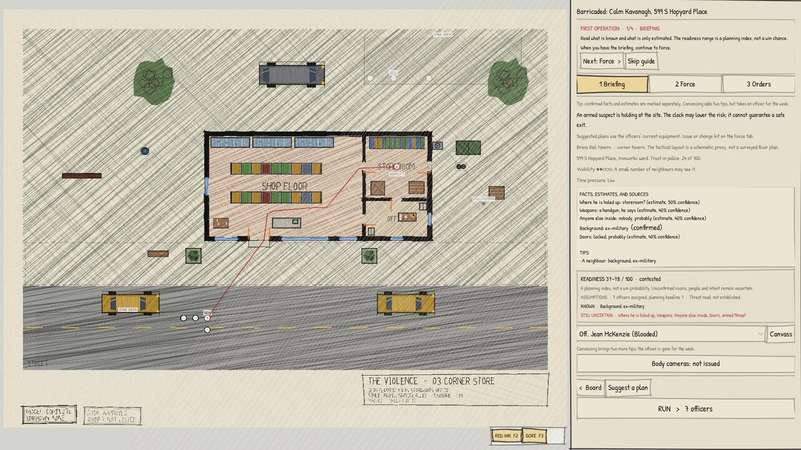

THE CARRICK LEDGER / SPECIAL EDITIONCONCEPT ART
PORT CARRICK / ELECTION YEAR
THE CITY
IS WATCHING.
EVERY CALL LEAVES A RECORD.
01 / THE FRONT PAGETHE VIOLENCE
THE CHIEF'S DESKWEEKLY BOARD / IN-GAME CAPTURE
YOU CHOOSE WHAT TO ANSWER
EVERY
CALL MATTERS.
Six wards. Limited officers.
A city that keeps score.
02 / THE SITUATIONSPORT CARRICK
PORT CARRICK, ELECTION YEARSPECIAL EDITION / 50¢
THE CARRICK LEDGER
THE PLAN IS ONLY
THE BEGINNING.

Assign the people. Set the orders. Watch the operation play out.
THE CITY REMEMBERS
ILLUSTRATIVE EDITORIAL LAYOUT • GAME BRIEFING CAPTURE
THE CITY / THE CONSEQUENCESVISUAL PROTOTYPE
THE CAMPAIGN ENDS ON ELECTION NIGHT.
40 WEEKS.
ONE VERDICT.
04 / THE ELECTIONTRUST HAS CONSEQUENCES
THE CARRICK LEDGERFINAL EDITION / TRAILER PROTOTYPE
FORTY WEEKS TO THE ELECTION
THE VIOLENCE
A TACTICAL COMMAND AUTOBATTLER
EARLY ACCESS • WORK IN PROGRESS
PORT CARRICKEVERY DECISION IS ON THE RECORD.